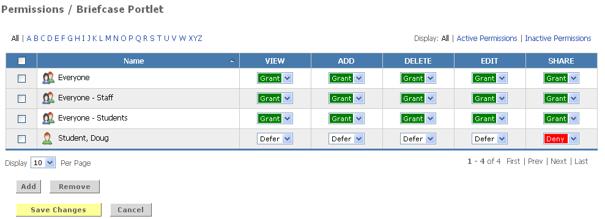

To establish permissions for a portlet
1. Navigate to the Portlet Permission Manager Channel.
2. Click the link for the portlet whose permissions will be created or updated.
3. Click the Add button to select the users and groups to whom permissions will be granted.
You may select members and groups in one of two ways: you may search for specific members or groups, or browse through the directory of Campus Groups or your own Personal Groups.

To search for a specific member or group:
4. Enter a whole or partial member or group name of the in the Search field.
5. Click the Go button.
6. From the list of search results, place a checkmark next to each member/group that you wish to add.
7. Click the Add to My Selection Basket button.
To browse through the listings of Campus Groups or your Personal Groups:
8. Click the Groups tab within the permission portlet
9. Choose Campus or Personal Groups.
10. Find the group you wish to add.
11. Place a checkmark next to the group name.
12. Click the Add to My Selection Basket button.
13. When all desired groups and members have been selected, click the Submit My Selections button.
14. For each group or individual displayed in the permissions view, select the appropriate permission.
a. Grant - Enables the group/user to perform the function
b. Deny – Prohibits the group/user from performing the function
c. Defer – Causes the group/users privileges to be inherited from those set for a parent group of which they are a member. If no privileges have been set for a parent group, defer will be treated as a permission of Deny.

15. When all permissions have been assigned, click Save Changes.